Incident Response Case Workflow
Home SOC Lab Pack · Lab 7, built on the Home SOC foundation
The scenario
Cobalt Bridge Bank is a small regional bank where ransomware staging has been detected on a loan-processing endpoint. The behaviour is a scheduled task creation followed by an attempt to disable Windows Defender. Encryption has not started, but it could within hours, and banking regulators expect documented procedures and timelines for any suspected ransomware precursor. The scenario is simulated with a harmless script, while the detection, the integration, the case handling, and the response actions are all real.
The lab was designed around five problems an analyst faces in this situation:
- Manual handoff delays response. In the phishing lab the case was created by hand. In a time-critical incident, every minute spent on data entry is a minute the attacker keeps
- Two events must be read together. A scheduled task and a Defender change may each look harmless alone. The risk appears when they occur in sequence on the same host
- Context is lost between tools. If the detection sits in Wazuh and the investigation sits in TheHive, the analyst has to rebuild the picture before triage can begin
- Version mismatch. Wazuh's published TheHive integration was written for TheHive 4, while this lab runs TheHive 5.8.0
- Regulatory evidence. The response needs a timeline, a playbook, and a post-incident report that an auditor can follow
The approach
A harmless script on HOM-SVR-W004 creates a scheduled task and attempts a Defender tamper, so Wazuh fires a high-severity alert. A custom integration sends the alert to TheHive over Tailscale and promotes it to a case with the relevant observables. Cortex analyzers enrich those observables, and the analyst then follows a written playbook for "ransomware precursor on endpoint", aligned to NIST SP 800-61, covering triage, containment, eradication, and recovery. A post-incident report in TheHive records the timeline, root cause, and lessons learned. The detection maps to MITRE ATT&CK T1053.005 (Scheduled Task) and T1562.001 (Impair Defenses: Disable or Modify Tools).
Network architecture and data flow
The lab reuses the Home SOC foundation. HOM-SVR-W004 is the target endpoint, HOM-PC-L003 runs the Wazuh Manager and the integration script, and HOM-PC-L002 runs TheHive, Cortex, and CyberChef. A Tailscale overlay carries the integration traffic, and VirusTotal and Slack are the external services. The telemetry framework carries Windows Security, Sysmon, Suricata, and Zeek data over TCP 1514 and HTTPS links.
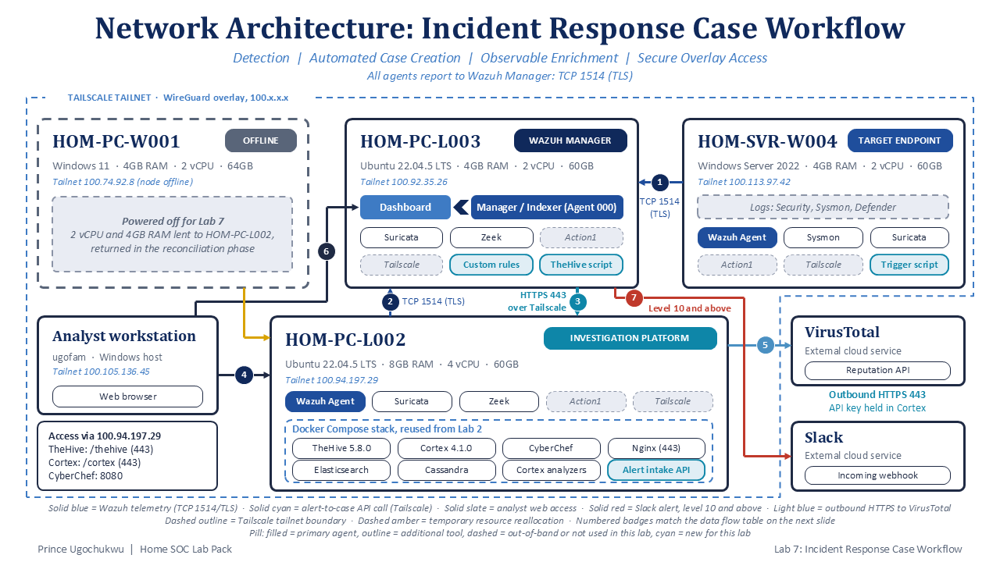
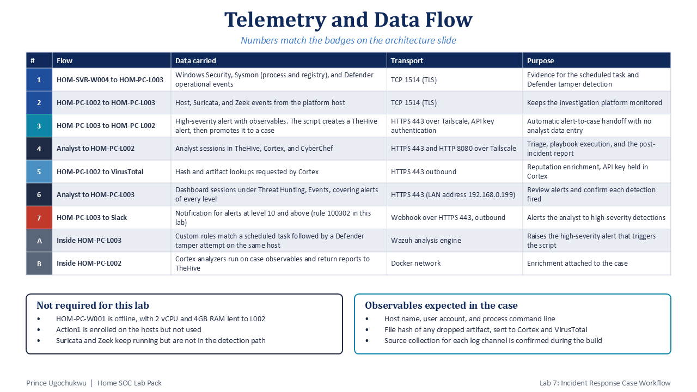
Technology stack
| Component | Role in this lab | Why it was chosen |
|---|---|---|
| Wazuh 4.14.8 (HOM-PC-L003) | Detects the behaviour and forwards the alert | Already the detection platform from earlier labs, so custom rules and integrations follow the same pattern as the Slack integration |
| TheHive 5.8.0 (HOM-PC-L002) | Holds the alert, the promoted case, tasks, timeline, and the post-incident report | Already running from the phishing lab, with the case lifecycle the deliverables require |
| Cortex 4.1.0 (HOM-PC-L002) | Enriches observables such as file hashes and dropped artifacts | Already integrated with TheHive and configured with analyzers |
| Custom integration script (HOM-PC-L003) | Sends the alert to TheHive and promotes it to a case | Wazuh has no native TheHive connector, and the published script targets TheHive 4 |
| Tailscale | Carries the integration traffic from L003 to L002 | The tailnet is stable across router changes |
| NIST SP 800-61 | Structures the playbook and report | The lifecycle named in the brief, and widely recognised by regulators and auditors |
Platform baseline
Software versions were confirmed on both platforms before the build began: Wazuh 4.14.8 on HOM-PC-L003, and TheHive 5.8.0, Cortex 4.1.0, Cassandra 4.1.12, Elasticsearch 8.19.22, Nginx, and CyberChef running on HOM-PC-L002.
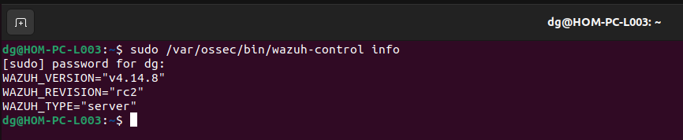
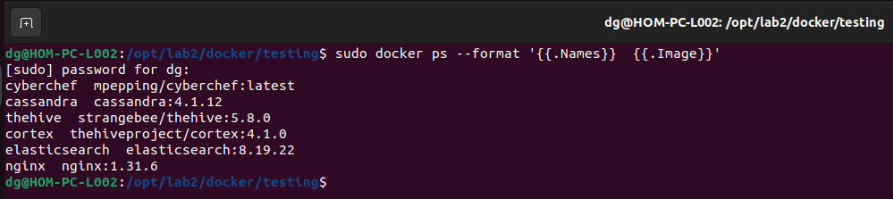
Tailscale cutover
The investigation platform was originally reached over HOM-PC-L002's bridged LAN address, which proved unreliable in the phishing lab: a fault in the host machine's Wi-Fi path caused new TCP connections to time out while ping kept working. To remove that class of fault and to prepare for a router change, the analyst workstation and all four lab VMs were enrolled in a private Tailscale network. Each device gets a stable virtual address that does not change with the router, subnet, or ISP, which a LAN address cannot guarantee.
Connectivity to HOM-PC-L002's Tailscale address was confirmed on ports 443, 9000, 9001, and 8080. The Nginx certificate had been issued for the old LAN address, and modern browsers require a subject alternative name to validate a certificate against an IP address, so it was reissued directly with OpenSSL to include the Tailscale address as a SAN. TheHive and Cortex then loaded with only the expected self-signed notice.
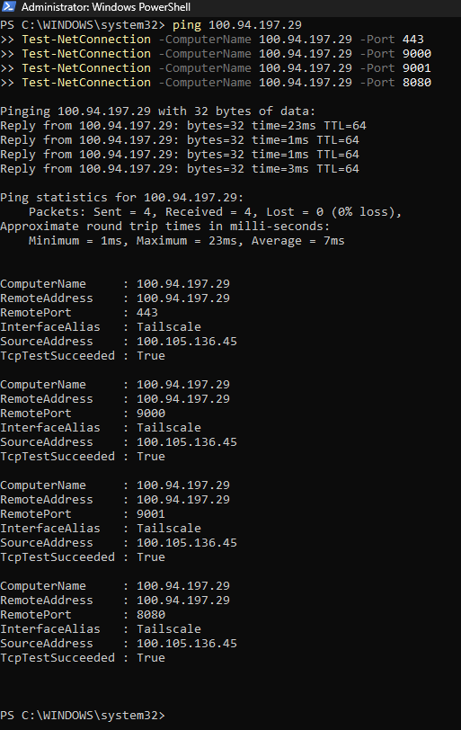
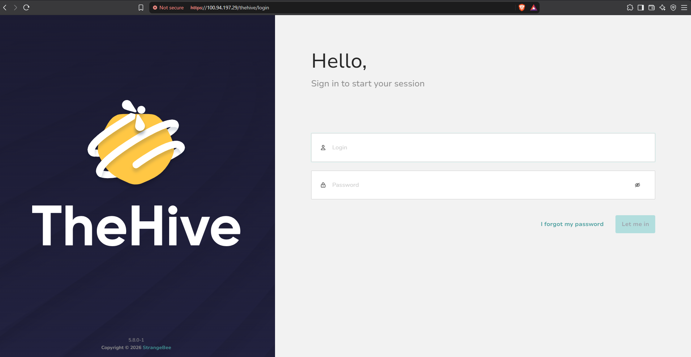
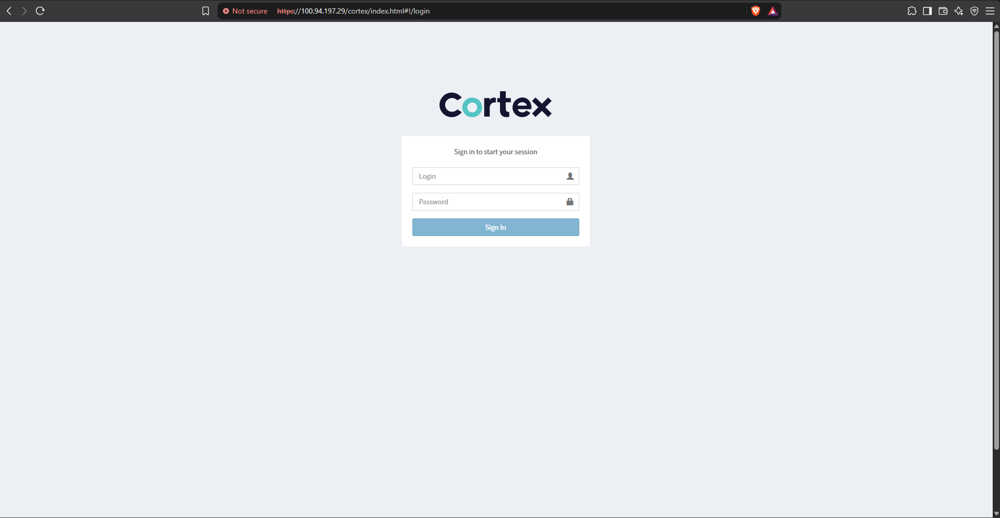
Telemetry baseline and agent configuration
The telemetry baseline was reviewed on HOM-SVR-W004 and HOM-PC-L003 before any detection content was written. Defender was active with real-time protection on and tamper protection off. The audit policy for Other Object Access Events was set to No Auditing, so scheduled task creation events (4698) were not being generated. Sysmon 15.22 was running with a configuration that logged process creation, task file creation, and Defender-related registry changes. On the manager, custom rule IDs up to 100211 were already in use, so IDs from 100300 were reserved for this lab.
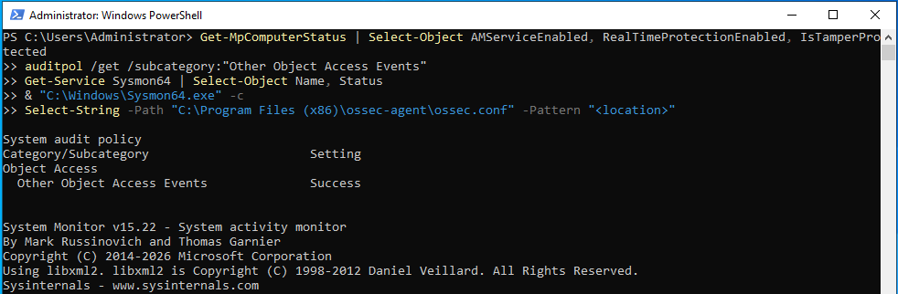
The audit policy was changed to log successes so task creation reaches the Security log, and the change was verified with auditpol. The Wazuh agent configuration was then reviewed. Application, Security, System, Sysmon, the active response log, and the Suricata eve.json file were being collected, Security was listed twice, and no Defender channel was configured.
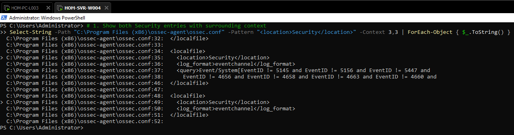
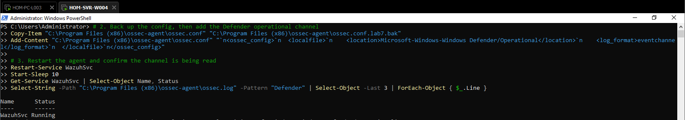
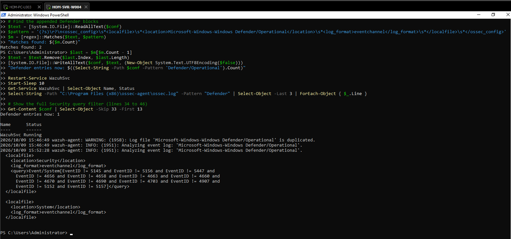
Running the trigger and capturing raw events
Wazuh archive logging was confirmed enabled so every event from the agents is available for rule design. A harmless simulation of ransomware staging was then run on HOM-SVR-W004: a placeholder file was created, a scheduled task named CobaltBridge_LoanSync was created, and Defender real-time monitoring was disabled for about 38 seconds before a restore was issued. The script's final status check read False because it ran before the restore had taken effect, so the restore was repeated manually and Defender was verified as enabled.
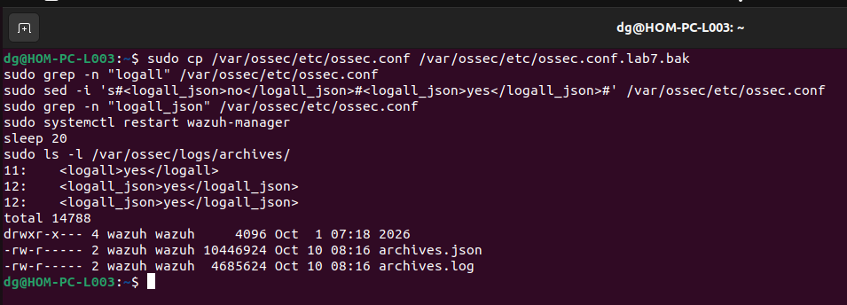
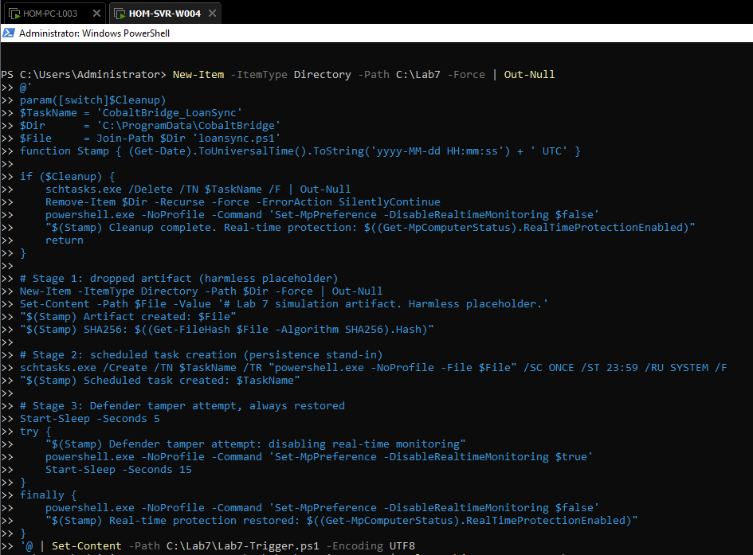
Seven events from the simulation were found across the Sysmon and Security channels, covering file creation, task creation, the PowerShell tamper command, and the Defender registry change. Only built-in rules at level 4 fired, no built-in rule detected the Defender tamper or correlated the two behaviours, and no Slack message was sent because every alert sat below the integration's level 10 threshold.
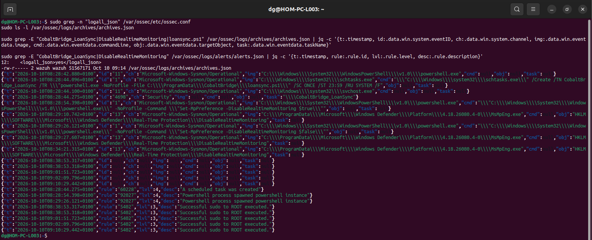
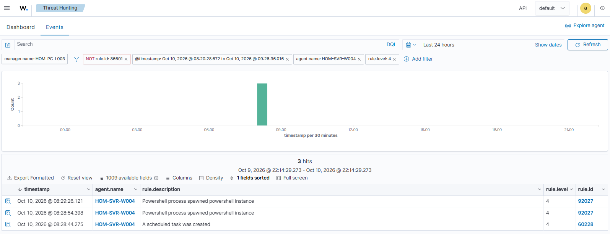
Custom detection rules
The parent rules were verified first: the sysmon_event1 group and rule 60228 for scheduled task creation. After a backup of local_rules.xml, three rules were added in the 100300 range: rule 100300 for scheduled task creation (level 8), rule 100301 for a PowerShell command disabling Defender real-time monitoring (level 10), and rule 100302 correlating the two on the same host within 300 seconds (level 13). The configuration was validated with wazuh-analysisd, which returned RULES OK, and the manager was restarted.
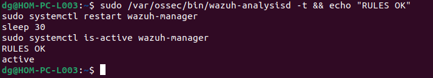
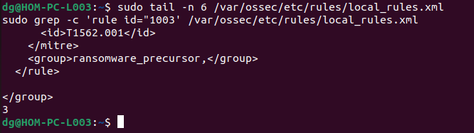
The rules were tested end to end after the earlier task and file were cleaned up. Rule 100300 fired when the task was created, and about ten seconds later rule 100302 fired at level 13 for HOM-SVR-W004. The level 13 alert was also posted to Slack by the existing integration. The Defender restore command did not trigger the tamper rule, and real-time protection was verified as enabled afterwards.
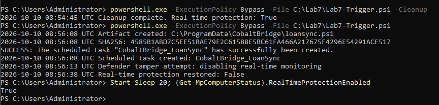
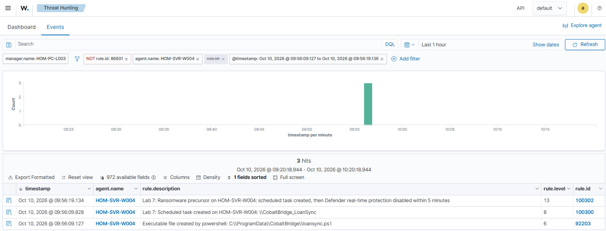
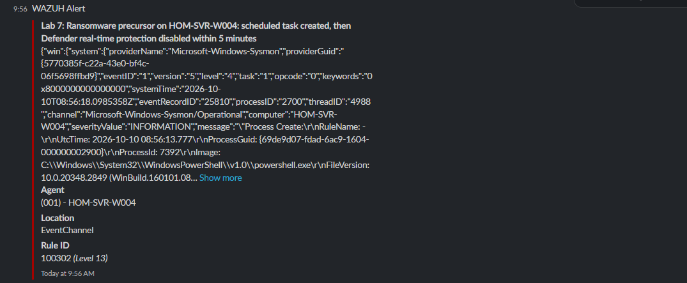
Wazuh to TheHive integration
A dedicated service account named Wazuh Integration was created in TheHive so alerts can be created and promoted to cases without administrative rights. Its API key is stored on the manager in a file owned by root with group wazuh and permissions 640, so the script can read it without the key appearing in the Wazuh configuration. The TheHive certificate served by Nginx was retrieved over Tailscale and saved so the script can verify the TLS connection instead of disabling verification.
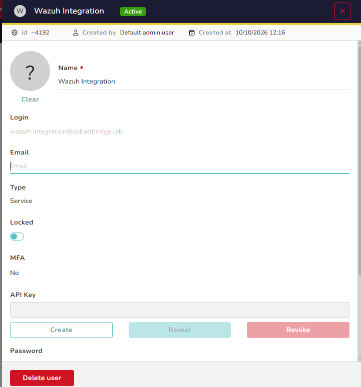
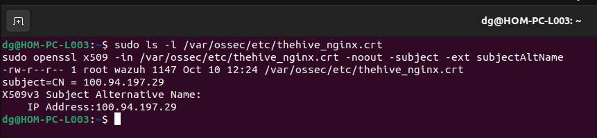
The first connection test returned HTTP 400. The stored key was 204 bytes, which showed that extra text had been captured when the key was pasted. The key was replaced with the correct 32-character value, and the repeat test against TheHive's current-user endpoint returned HTTP 200.
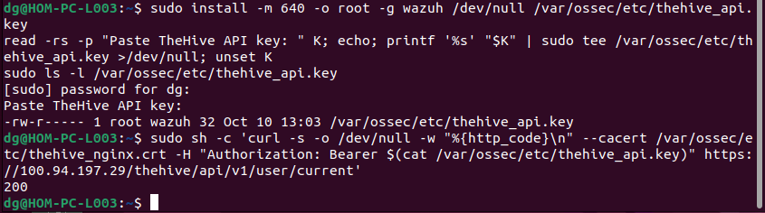
A custom integration script and its wrapper were then created on the manager. The script reads each rule 100302 alert, builds a TheHive alert with the host, account, command line, process hash, and scheduled task name as observables, and promotes it to a case. It reads the key from the protected file and verifies TLS with the saved certificate.
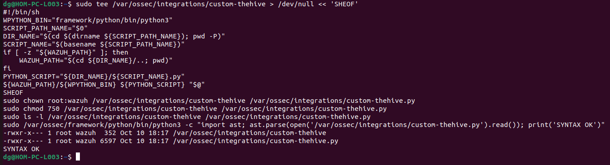
The first replay of a saved rule 100302 alert was rejected with HTTP 403. A query of the account showed it had been created in TheHive's platform administration organisation with the admin profile, which carries platform-level permissions only and no alert or case rights. A new service account was created in the demo organisation, where the cases live, with the analyst profile and a new key. The original account, which held an over-privileged key, was deleted.
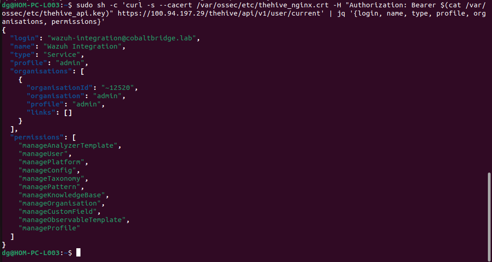
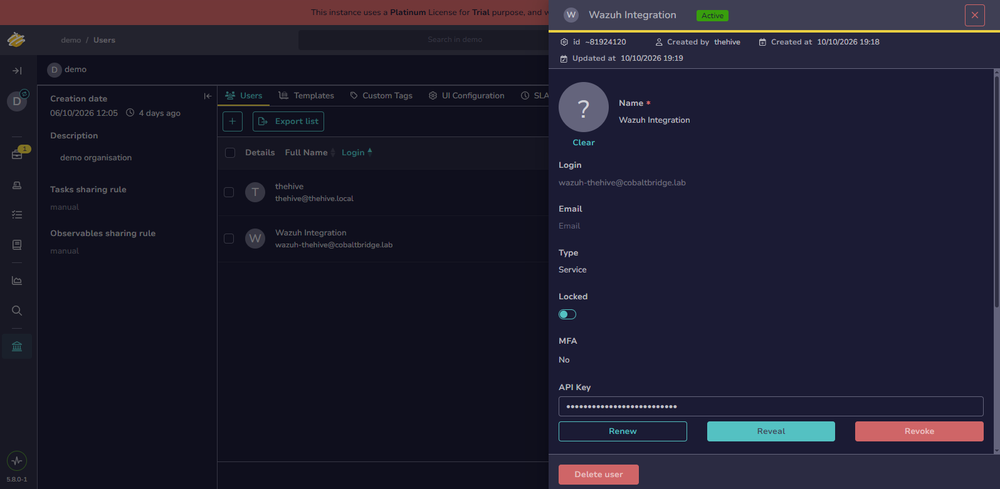
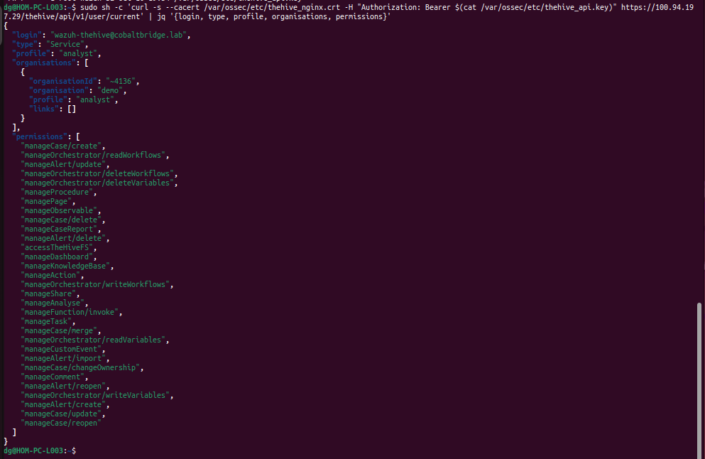
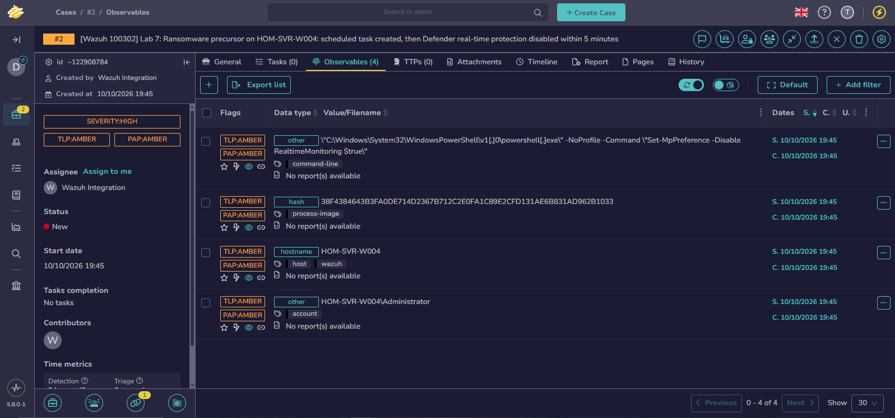
An integration block named custom-thehive was then added to the manager configuration after a backup, set to run only for rule 100302 and to call TheHive at its Tailscale address. The configuration validated, but the first restart did not load the block, as the integration log listed only Slack. After a second restart the log showed both integrations enabled.
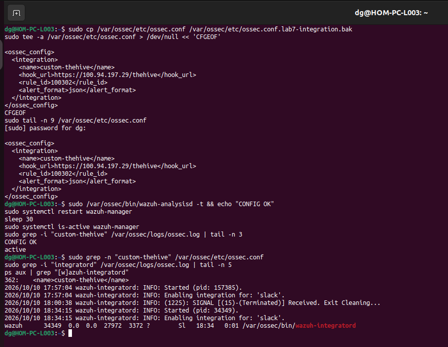
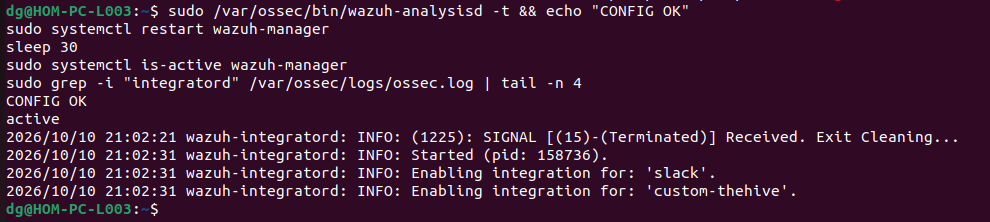
Live end-to-end test
The detection-to-case workflow was then tested with no manual step in TheHive. After cleanup, the trigger ran on HOM-SVR-W004. Wazuh raised rule 100300 one second after the task was created and rule 100302 three seconds after the Defender tamper command. The dashboard showed both alongside a built-in rule for the executable created by PowerShell. The level 13 alert reached Slack, and the integration created a TheHive alert and promoted it to case 3 about 18 seconds after the tamper command.
| Event | Time (UTC+1) |
|---|---|
| Task created, rule 100300 raised | 21:16:28 to 21:16:29 |
| Tamper command, rule 100302 raised | 21:16:33 to 21:16:36 |
| TheHive alert created | 21:16:47 |
| Case #3 opened | 21:16:51 |
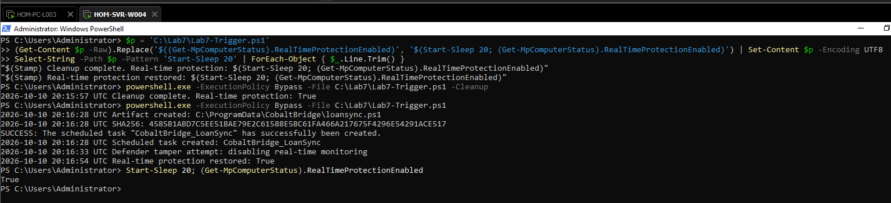
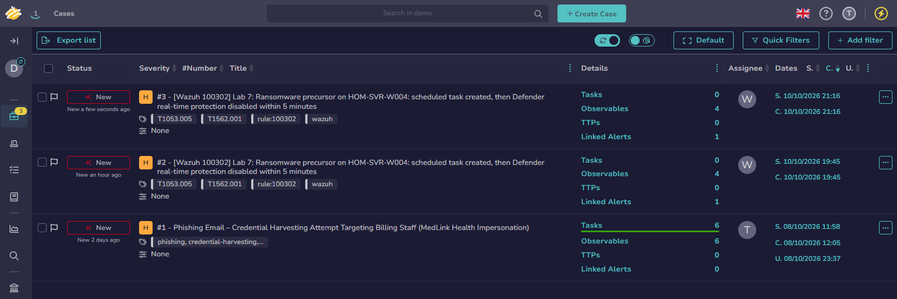
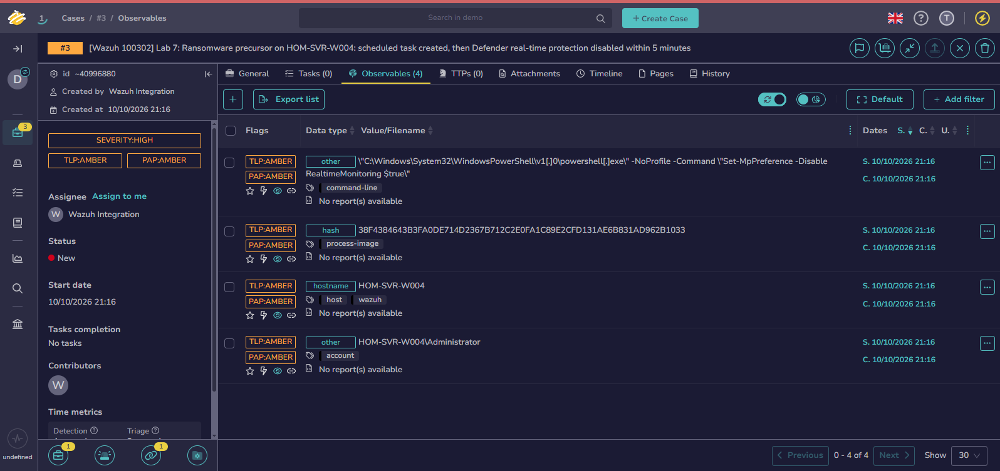
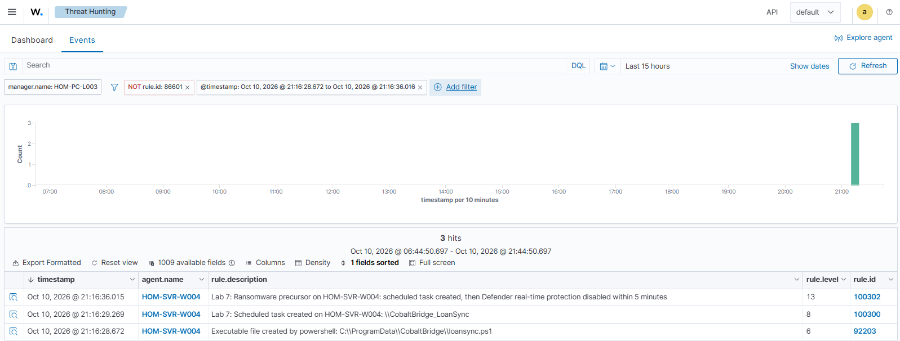
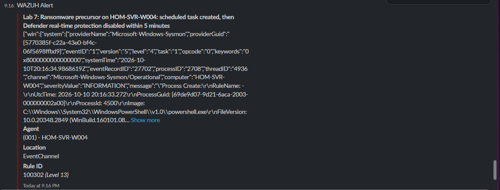
Observable enrichment through Cortex
The process image hash added automatically by the integration was confirmed to match the SHA256 of powershell.exe on the host. The SHA256 of the dropped placeholder file was confirmed on the host and added to the case as an observable tagged dropped-artifact and marked as an indicator of compromise, because the alert itself could not carry that value. The VirusTotal analyzer then ran through Cortex against both hashes. The process image hash returned no detections across 71 engines, consistent with the legitimate Microsoft binary, but VirusTotal also listed many alternative file names for it, so a clean hash did not clear the activity and the assessment rested on the command line and the sequence of events. The dropped artifact hash returned no report, consistent with a locally created placeholder file.
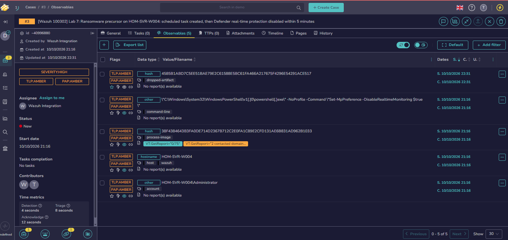
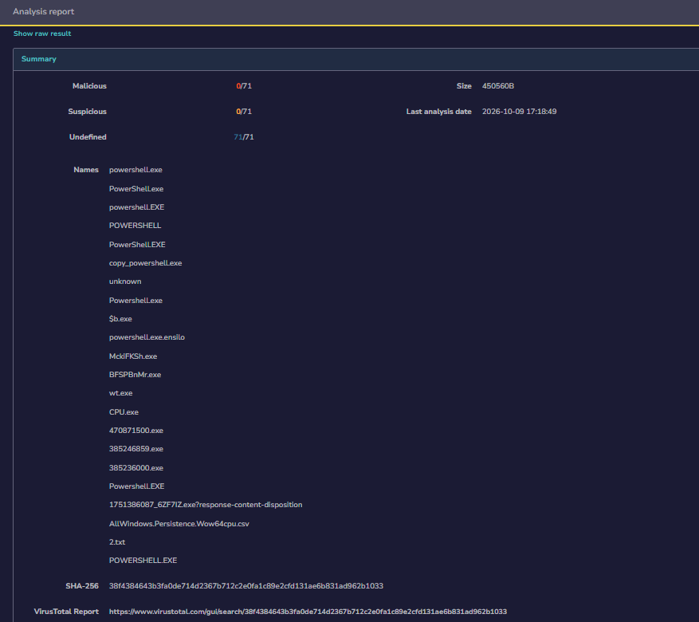
The incident response playbook
The playbook sets out how Cobalt Bridge Bank responds when Wazuh detects a ransomware precursor on an endpoint. It begins when rule 100302 raises a high-severity alert and opens a case automatically, and it is written for the analyst who owns the incident from alert to closure and for the business leaders who must decide quickly and document each decision. It follows the NIST SP 800-61 lifecycle, with actions, tools, and target timelines for each phase, so the response is consistent and open to regulator review. It was loaded into case 3 as 16 tasks under five lifecycle phases, created through the TheHive API with the integration's service account.
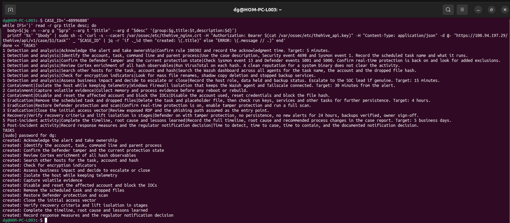
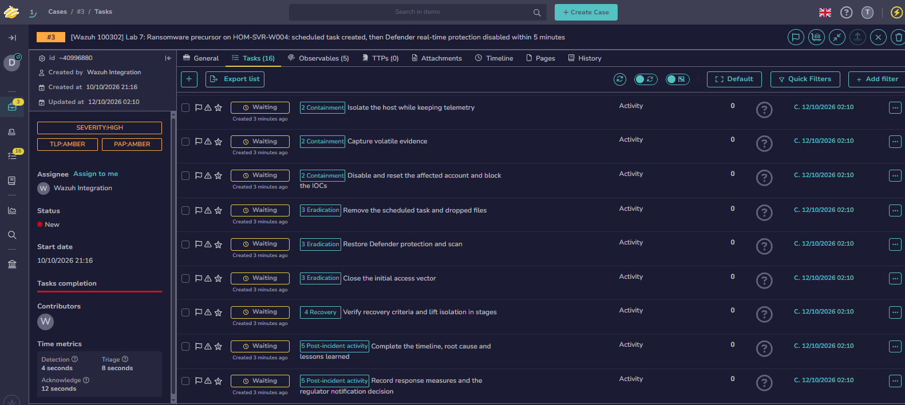
Triage before containment
The host was checked for readiness to isolate: the session was the console, Windows Firewall was enabled on all three profiles, the Tailscale daemon was located, and the Wazuh manager was reachable on TCP 1514 over Tailscale. Triage then completed the seven analysis tasks. Defender real-time protection was on with no exclusions, the scheduled task CobaltBridge_LoanSync was present and set to run PowerShell against the placeholder file as SYSTEM, and no shadow copies were found. A 72-hour dashboard search across all agents found the task name only on HOM-SVR-W004, in the two alerts raised by rule 100300. The incident was assessed as a genuine ransomware precursor with no encryption observed, so the response moved to containment.
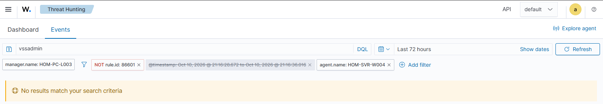
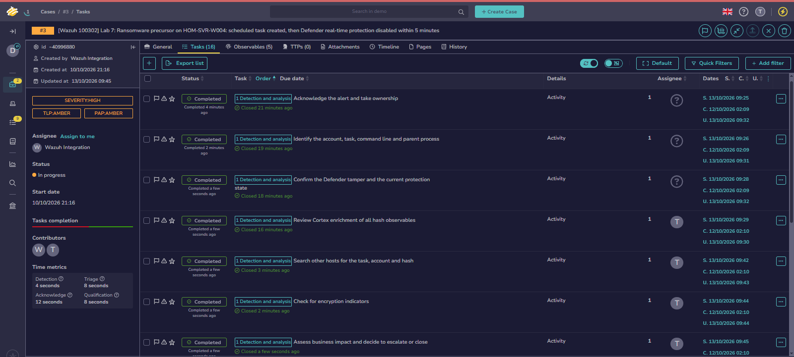
Containment: isolating the host
HOM-SVR-W004 was isolated from its console at 08:01 UTC on 13 October using Windows Firewall. Two allow rules were created first, one for the Wazuh agent to reach the manager at its Tailscale address on TCP 1514 and one for the Tailscale daemon. The default inbound and outbound actions were then set to block on the domain, private, and public profiles. Verification showed an internet connection test blocked, the manager connection still open, the Wazuh agent service running, and the agent Active on the manager, with a Tailscale ping answered, so telemetry and secure management access were retained.
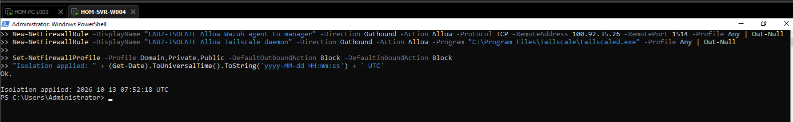
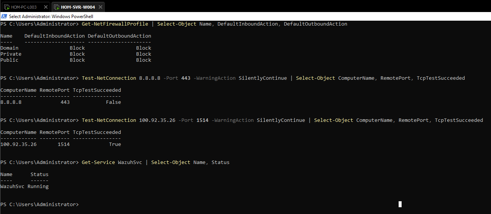
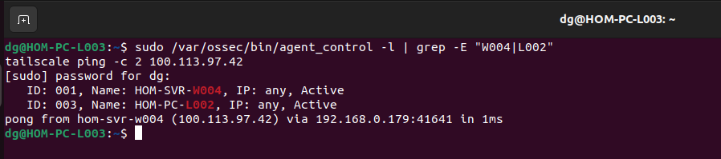
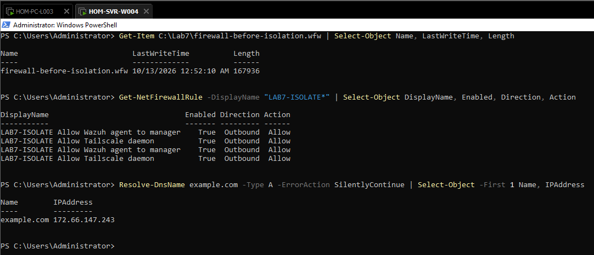
Isolation found incomplete, then tightened
Verifying the isolation from outside showed it was incomplete. A connection test from HOM-PC-L003 found TCP port 5985 (Windows Remote Management) still reachable on both the LAN and Tailscale addresses, because inbound allow rules that are enabled by default take precedence over the default block. A review of all enabled inbound rules showed about 45 rules outside the core networking group. Their names were saved to a file and the rules were disabled, after which the LAN address showed ports 135, 445, 5357, 5985, and 47001 closed. Port 5985 stayed reachable over Tailscale because the Tailscale rule trusts traffic arriving through the tunnel, so a block rule was added for inbound traffic from the Tailscale address range (100.64.0.0/10).
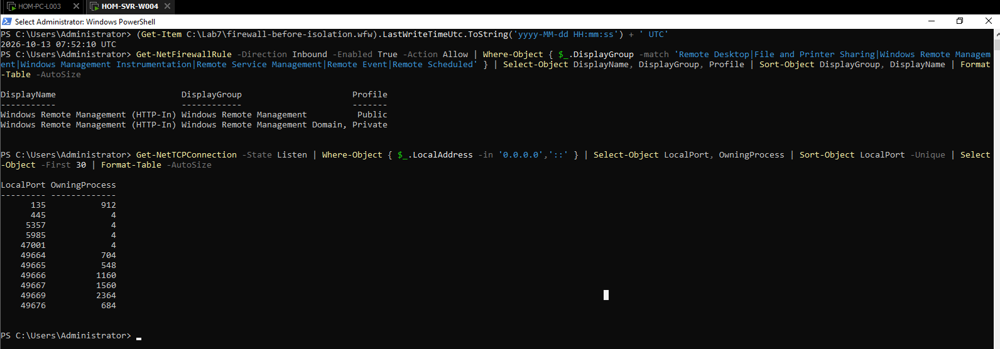
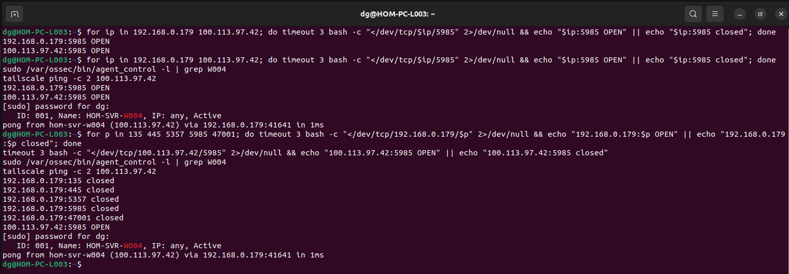
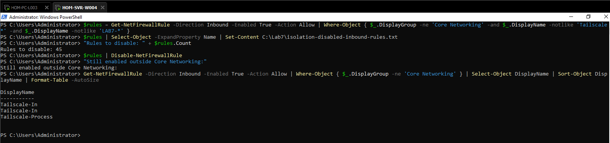
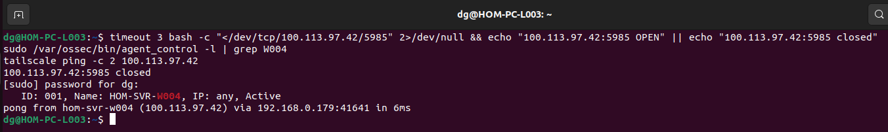
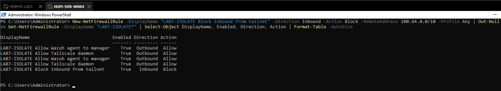
Eradication
Eradication was carried out while the host stayed isolated. The scheduled task CobaltBridge_LoanSync and the dropped file folder were removed and confirmed absent. A review of non-Microsoft scheduled tasks, the Run key, and non-Microsoft automatic services found only known items and nothing referring to the simulation. A Defender quick scan ran on the host and returned no threat detections, and a quick scan was used instead of the playbook's full scan to keep the exercise short. Tamper Protection was turned on and verified, and the antivirus signatures were found to date from 12 October because the isolation blocks updates.
Recovery
Before recovery began, a dashboard search for alerts of level 7 and above from HOM-SVR-W004 over the previous 24 hours returned nothing, meeting the playbook's quiet-period criterion. Recovery then ran in two stages. In stage 1, the default outbound action was returned to not configured and the four isolation allow rules were removed, while the inbound default stayed on block, the tailnet block rule stayed in place, and the saved inbound rules stayed disabled. An outbound test succeeded, and with outbound access back the Defender signatures were updated to the latest release, followed by another quick scan with no detections.
In stage 2, on 15 October, the remaining isolation rules were removed, the inbound default was returned to not configured on all profiles, and 43 of the 45 inbound rules disabled during containment were re-enabled from the saved list. The two Windows Remote Management rules were deliberately left disabled as a hardening change. A port test then showed ports 135, 445, 5985, and 47001 closed, with port 5357 open again because the default network discovery rule had been restored. The agent stayed Active and the Tailscale ping was answered.
48-hour alert review
The 95 alerts of level 7 and above raised for HOM-SVR-W004 in the 48 hours after recovery began were traced to their sources. Most were rules 92205 and 92213, caused by PowerShell writing its script-policy test files to temporary folders at the start of each session, and a burst on 13 October was caused by Windows Disk Cleanup extracting its provider files. Two rule 100300 alerts came from Microsoft's own Defender scheduled scan task. A periodic compliance scan scored the host 26 percent against the CIS Windows Server 2022 benchmark, and a firewall rule alert was traced to Tailscale adding its own inbound rules. None of the alerts showed a Defender disable, the simulated task, shadow copy deletion, or rule 100302, so the quiet-period criterion was assessed as met and the routine alert volume was recorded as a tuning item. An unclean restart on 13 October was a forced restart of the virtual machine because of system lag, after which the isolation rules remained in force.
Post-incident report and case closure
Case 3 was closed as a true positive with no impact after all 16 playbook tasks were marked Completed. The recovery task note recorded the two recovery stages, the criteria checked, and the outcome of the 48-hour alert review. The post-incident report page was saved in the case and a formatted Word version was produced.

Network reconfiguration and agent restoration
After a home router replacement, the LAN addresses of the lab machines changed and the Wazuh agents showed as disconnected. The agent on HOM-SVR-W004 was found pointing at the manager's previous LAN address. The agents on HOM-SVR-W004 and HOM-PC-L002 were reconfigured to use the manager's Tailscale address, which does not change with the network, and HOM-PC-L002 re-registered under a new agent ID. TheHive, Cortex, and the integration were unaffected because they already used Tailscale addresses. HOM-PC-W001 was powered on briefly, its agent address updated, and the agent confirmed Active.
Retiring the investigation stack and the integration
After all evidence was captured, the investigation stack on HOM-PC-L002 was purged so the resources borrowed from HOM-PC-W001 could be returned. The compose project was stopped and its containers removed, the data and log directories were emptied while the configuration, certificates, templates, and compose files were kept for a possible rebuild, and the images were removed in two passes, the second catching the eight Cortex analyzer images and an empty volume the first had missed. CyberChef was left running. Memory in use fell from 5.8 GiB to 1.4 GiB, and disk use fell from 23 GB to 18 GB.
The TheHive integration was then retired on HOM-PC-L003 because the service no longer existed. After a backup of ossec.conf, the custom-thehive block was removed and the stored API key deleted. The configuration validated, the manager restarted, and the integration log listed only Slack. Rules 100300 to 100302 and the integration scripts were kept, so the workflow can be restored by adding the block and a new key to a rebuilt TheHive.
HOM-PC-L002 was reduced to its original size and kept running CyberChef and its Wazuh agent, and HOM-PC-W001 was powered on with its agent reporting Active, so the platform was ready for the next project.
Challenges and fixes
| Problem | Cause | Fix |
|---|---|---|
| No TheHive 5 connector | Wazuh's published integration targets TheHive 4 | Wrote a custom integration script and wrapper for TheHive 5 |
| No scheduled task events | Audit policy for Other Object Access Events was set to No Auditing | Enabled success auditing and verified it with auditpol |
| Duplicate Defender channel | The block was added while an entry already existed | Removed the extra entry after reading the agent log |
| HTTP 400 on first API test | Extra text captured when the key was pasted | Replaced the key with the correct 32-character value |
| HTTP 403 on alert replay | Account sat in the admin organisation with platform-only rights | Created an analyst service account in the demo organisation and deleted the over-privileged one |
| Integration not loaded | First manager restart did not pick up the new block | Restarted again and confirmed in the integration log |
| Defender status read False | The script checked before the restore had taken effect | Added a twenty-second wait to the status check |
| Isolation still reachable | Default-enabled inbound allow rules took precedence over the default block | Disabled about 45 inbound rules and added a block rule for the tailnet range |
| Stale signatures | Isolation blocked Defender updates | Updated signatures in recovery stage 1 and rescanned |
| Agents disconnected | Router replacement changed LAN addresses | Pointed the agents at the manager's Tailscale address |
What would change in production
- Tuning. Administrators and legitimate software create scheduled tasks constantly, so a production rule would need allow-lists and correlation with the Defender event to limit false positives
- Alert volume. Automatic case creation suits high-severity detections only, since promoting every alert would flood the queue
- Credential handling. The integration would use a least-privilege service account with a managed secret
- Containment decisions. Isolating a loan-processing host affects business operations, so a real SOC would define who approves isolation and how fast
- Evidence preservation. The playbook would address what is captured before a host is isolated or rebuilt
- Scale. A bank would add redundancy for Wazuh, TheHive, and the integration path so a failure does not silence alerting
The full project report is documented on Notion.